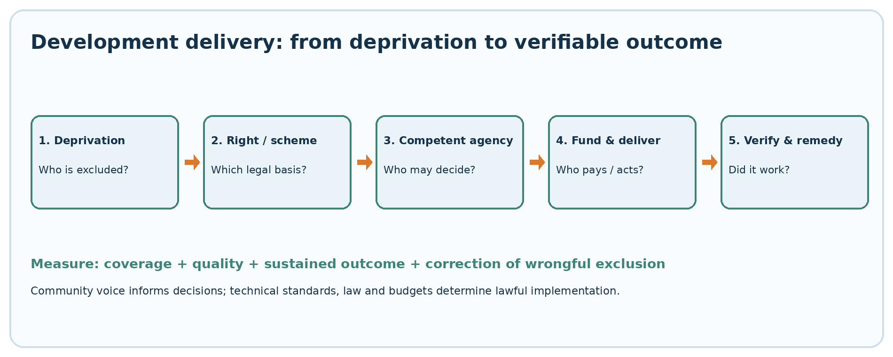
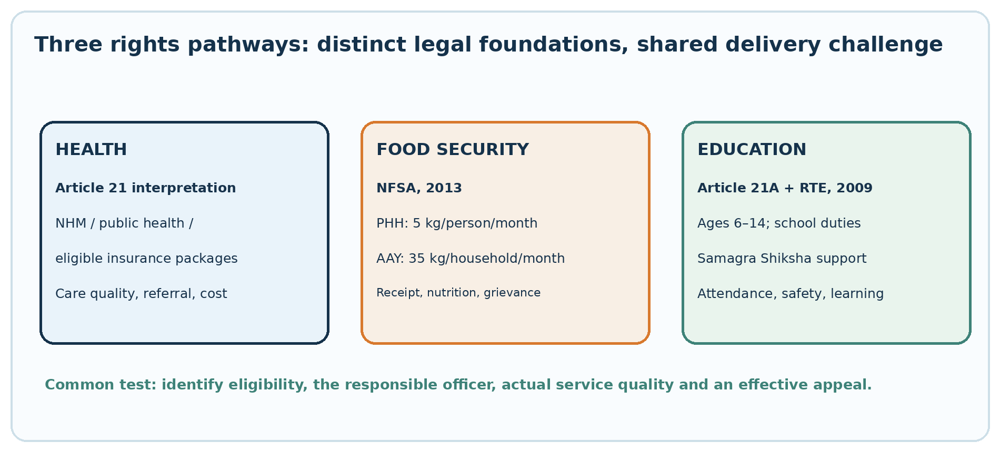

Programmes, Agencies and Institutions for Urban and Rural Development; Participatory Development; Poverty Alleviation; Women Empowerment; Rights to Health, Food Security and Education
TGPSC Group I | Paper III | Unit III | Topic 3 | Expanded draft | 27 October 2026
ACADEMIC STATUS: NOT APPROVED. All 25 MCQs and six mains questions are original practice material. No verified official PYQ is claimed. This manuscript has undergone structural and internal source checks, not a full subject-expert audit.
Study route: syllabus map → detailed concept chapters → diagrams and tables → standalone quick revision → explained MCQs → structured mains practice → evidence register.
Syllabus map and topic summary
TGPSC Group I | Paper III: Indian Society, Constitution and Governance | Unit III: Governance | Topic 3.
Notification No. 02/2024, Annexure II — syllabus text (official TGPSC PDF search-indexed; direct official host returned 403, wording independently checked against public reproduction):
Programmes, Agencies and Institutions working for the development of Urban and Rural Areas; People Centred Participatory Development; Poverty Alleviation Programmes; Women Empowerment and Inclusive Growth; Rights related to Health, Food Security and Education-Issues and Challenges.
Syllabus-to-chapter map
| Exact syllabus segment | Detailed chapters | Examination competency |
|---|---|---|
| Programmes, Agencies and Institutions—Rural | 1, 2, 6, 7, 12 | Compare Panchayats, district administration, employment, livelihoods, housing and water |
| Programmes, Agencies and Institutions—Urban | 1, 3, 12, 14 | Explain municipalities, MEPMA, PMAY-U and informal livelihoods |
| People Centred Participatory Development | 4, 13, 14 | Distinguish consultation, co-decision, social audit and grievance redress |
| Poverty Alleviation Programmes | 5, 6, 7, 10 | Explain measurement, targeting, rural employment transition, SHGs and food transfers |
| Women Empowerment and Inclusive Growth | 7, 8, 14 | Examine control of assets, unpaid care, intersectionality and actual earnings |
| Rights related to Health | 9, 14 | Distinguish constitutional interpretation, NHM and hospitalization schemes |
| Rights related to Food Security | 10, 14 | Apply NFSA household/person entitlements and Telangana distribution |
| Rights related to Education | 11, 14 | Apply Article 21A, RTE and learning-quality measures |
| Issues and Challenges | All chapters | Diagnose exclusion, quality, finance, accountability and evidence |
Topic summary
Urban and rural development requires institutions that connect legal authority, local knowledge, finance, technical delivery and remedies. Rural Panchayats, district structures, SERP, SHGs and Stree Nidhi have distinct roles; urban municipalities and MEPMA address the particular problems of informal work, insecure housing and service access. Participatory development is substantive only when marginalized residents can influence decisions and verify implementation. Poverty must be studied as income insecurity, multidimensional deprivation and vulnerability to shocks. As of 1 July 2026, the VB-G RAM G Act, 2025 replaces MGNREGA and guarantees 125 days of wage employment per eligible rural household. Women’s empowerment requires control over resources, safe mobility, reduced unpaid work and leadership—not merely loan disbursement. Health has a strong Article 21 jurisprudential foundation; food security has specific NFSA statutory entitlements; education for ages 6–14 has Article 21A and the RTE Act. Telangana examples include SERP/MEPMA, Indiramma Indlu, Mission Bhagiratha, Rajiv Aarogyasri and Food Security Cards. The test of success is actual access, quality, sustained outcomes and correction of exclusion, not announcement counts.
Learning outcomes
- Trace rural and urban development schemes to the legally competent institution and funding source.
- Explain why a Gram Sabha, SHG federation, municipality and district collector are not interchangeable.
- Compare poverty headcount, multidimensional poverty and vulnerability, including targeting errors.
- State accurately the July 2026 rural employment legal transition and 125-day household guarantee.
- Assess SHG credit by member control, enterprise survival and net earnings rather than loan volume.
- Distinguish Article 21 health interpretation, NFSA entitlements and Article 21A/RTE education rights.
- Diagnose a Telangana case involving food-card exclusion, urban migration, water quality or school learning.
- Write a critical mains answer with concrete institutions, rights, competing views and measurable reforms.
Important traps
- Current employment law is not MGNREGA 2005: the 2025 VB-G RAM G Act became operative on 1 July 2026; the historical 100-day figure is not the new guarantee.
- 125 days is per eligible rural household, not per adult.
- SHG is not Gram Panchayat; SERP is not MEPMA. Their membership, geography and legal roles differ.
- NFSA Priority Household = 5 kg/person/month; AAY = 35 kg/household/month. Do not exchange denominators.
- Telangana's 6 kg rice examples are state implementation, not an amendment to the national NFSA minimum.
- Article 21A/RTE covers 6–14 years. Preschool and higher education have distinct policy/legal arrangements.
- Article 21 health interpretation is not a promise of unlimited free treatment. Rajiv Aarogyasri packages and eligibility apply.
- A tap connection is not proof of safe, uninterrupted water. A sanctioned house is not proof of occupation.
- Programme output is not causal impact. Identify denominators, independent evidence and counterfactuals.
Detailed textbook-grade notes
1. Development administration: from welfare announcements to measurable capabilities
The conceptual problem: growth is not the same as development
Development in the Indian constitutional setting is more than an increase in output or an expansion in government spending. A district may report higher construction expenditure while residents still lack reliable drinking water, school learning, accessible health care or stable work. Amartya Sen's capability approach asks whether people gain substantive freedoms to live the lives they value; a human-development approach therefore studies health, education and material conditions together. India's Directive Principles provide a constitutional orientation: Article 38 directs the state to promote a social order informed by justice; Article 39 concerns livelihood, resource distribution and protection from concentration; Article 41 addresses public assistance within economic capacity; Articles 42, 45 and 47 concern humane work, early childhood care and nutrition/public health. These principles generally guide law and policy rather than functioning as an unrestricted personal cheque for every proposed programme. Article 21, meanwhile, has received a wide judicial interpretation in relation to dignified life and access to essential conditions of life [S2].
A useful analytical distinction is between inputs (money, buildings and sanctioned posts), outputs (houses constructed, taps installed, SHGs registered), outcomes (safe water actually delivered, income stabilized, girls attending and learning), and impact (lower avoidable illness, poverty and social exclusion over time). A government press release reporting a number of sanctions proves an administrative output, not necessarily sustained impact. The counterfactual matters: what would have happened without the intervention? For example, an irrigation tank repaired before a good monsoon may show higher cultivation, but the contribution of rainfall must be distinguished from the effect of the repair. Good evaluation uses baseline conditions, comparable groups where feasible, disaggregated data and field verification, not only beneficiary testimonials.
Constitutional and institutional division of responsibility
The Union sets national standards and finances many centrally sponsored schemes; the state adapts, co-finances and administers them; districts coordinate departments; Gram Panchayats and municipalities identify local needs and maintain some assets. Articles 243G and 243W enable state legislatures to devolve functions to rural and urban local bodies. The Eleventh and Twelfth Schedules list possible subjects, but listing does not automatically transfer staff, funds or legal authority. An anganwadi, primary health centre, school and village water scheme may share a locality yet have different departmental chains. The practical question is which agency is answerable for a failed service, which budget pays for repair and which appeal route exists.
Telangana as a governance laboratory
Telangana's SERP works through rural women's community institutions; MEPMA focuses on urban poverty; Mission Bhagiratha and municipal agencies deal with water; Indiramma Indlu concerns housing; civil-supplies departments administer food-security cards; the health department and Rajiv Aarogyasri address different parts of health access [S5-S12]. These are not interchangeable programmes. A credit federation cannot order a hospital to admit a patient; a municipal mission cannot grant an entitlement reserved to the state civil-supplies authority. The fact that several programmes serve the same family makes convergence important but does not erase statutory responsibilities.
Competing models and consequences
One approach favors centrally specified entitlements, digital beneficiary databases and standard unit costs to limit local discretion. Another favors community-designed projects and decentralized budgets because needs vary across hamlets, urban wards and marginalized settlements. Uniform rules can protect against discrimination but can also exclude a person whose records are outdated. Local discretion can adapt to conditions but can be captured by powerful groups. A defensible model combines minimum enforceable standards, meaningful participation, published beneficiary criteria, funded local institutions, independent grievance redress and outcome evaluation. In a mains answer, evaluate development by who is included, what right or service exists, who implements it, whether it works and how a denial is corrected.
2. Rural development institutions: Gram Sabha, Panchayats, DRDA and line departments
Rural institutions and their legal architecture
The 73rd Constitutional Amendment created Part IX of the Constitution. Article 243A concerns Gram Sabha powers as determined by state law; Article 243G concerns Panchayat responsibilities; Article 243H concerns local taxation and funds; Article 243I requires a State Finance Commission. The Eleventh Schedule contains 29 subject areas including agriculture, minor irrigation, rural housing, drinking water, poverty alleviation, health, education and women and child development. Telangana's Panchayat Raj Act, 2018 gives the operational framework for Gram Panchayats and higher rural tiers. An exam answer must distinguish the Gram Sabha, comprising persons on the village electoral rolls, from the Gram Panchayat, the elected institution; neither is simply a sub-office of the District Collector [S2, S5].
District Rural Development Agencies or district rural-development structures coordinate livelihood programmes and links to block/mandal implementation, but their precise organizational position depends on state orders. SERP's rural community architecture links Self-Help Groups (SHGs) to Village Organizations, Mandal Samakhyas and Zilla Samakhyas. The Khammam district SERP profile explicitly describes this federation sequence and its objective of member-owned, member-managed institutions [S6]. Such federations can mobilize savings, credit, livelihoods and social action; they do not automatically become elected Panchayats. A federation can make collective demands, while the Panchayat retains statutory duties over its own functions.
Programmes as complementary instruments
Rural housing, roads, sanitation, employment and water must be read as a package rather than isolated schemes. PMAY-Gramin addresses rural housing; PMGSY focuses on eligible rural road connectivity; Jal Jeevan Mission aims for functional household tap water and community-led source sustainability; SBM-Gramin Phase II addresses sustained open-defecation-free behaviour and solid/liquid waste management [S13-S15]. In Telangana, Mission Bhagiratha was designed for household piped-water access, with state district pages setting out service norms; however, a connection statistic must not be confused with daily pressure, microbiological safety or maintenance performance [S7]. Where a village receives a new house without a safe water connection, sanitation and accessible road, the full welfare benefit is reduced.
A practical convergence plan begins with a village deprivation map: habitation-wise water reliability, house quality, sanitation, landlessness, road access and vulnerable households. The Gram Sabha discusses priorities; technical staff check feasibility; scheme-specific authorities approve and finance; works are geo-tagged and recorded; the public inspects outcomes. A common village plan is useful only when every line item identifies its financing source and legally responsible implementing agency. It is incorrect to presume that one Gram Sabha resolution can itself release a centrally sponsored scheme's funds.
Accountability and conflict
A frequent tension is between speed and scrutiny. District administrators may prefer large contractors to finish water infrastructure quickly; communities may favor smaller, maintainable works and locally trained operators. A road built to meet a target can still be unusable in monsoon if drainage was ignored. The remedy is technical quality assurance plus local monitoring, social audit where legally provided, and published defect-liability obligations. Women, landless households and Scheduled Tribes may be underrepresented in village meetings even where the meeting formally occurs. A genuinely participatory process therefore checks attendance by social group, meeting time, language, accessibility and whether objections altered decisions.
Telangana application
Suppose a tribal hamlet reports intermittent water supply. The village-level institution records the complaint and assesses source/pipe maintenance; water-supply engineers test the technical cause; district officials coordinate interdepartmental action; the funding authority sanctions any major repair. If residents are told the village is already 'covered', the relevant evidence is not only the connection register but tap functionality, quality tests, outage duration and complaint resolution. This example demonstrates why programme coverage, democratic participation and enforceable service delivery must be studied together.
3. Urban development: municipalities, MEPMA, housing, sanitation and informal livelihoods
Urbanization changes the unit of analysis
Urban poverty is not merely rural poverty relocated to a city. A daily-wage worker in Hyderabad may earn more cash than a rural counterpart but face high rent, insecure tenure, costly transport, pollution, lack of childcare and unstable informal employment. Migrant workers may lack documents linked to their current residence. Urban programmes must therefore account for spatial access: where affordable housing is built relative to jobs, schools, clinics and public transport. A distant house can be nominally affordable yet increase total household expenditure and time poverty. The 74th Amendment's Part IXA, Article 243W and Twelfth Schedule provide the municipal constitutional framework, while Telangana municipal legislation and GHMC's separate statute define operational powers [S2].
Institutions and programme roles
Municipalities handle specified local services such as sanitation, local roads and public health functions, subject to state law. Metropolitan planning and development authorities can operate under distinct legislation; they should not be mistaken for elected municipal councils. The Mission for Elimination of Poverty in Municipal Areas (MEPMA) was established through a Telangana/AP-era government order and registered as a society to support urban poverty reduction and community self-reliance. Its official portal states its mission to improve poor families' access to services through self-managed institutions [S8]. The Union's urban livelihoods mission architecture has historically included urban SHG formation, skills, self-employment and shelter for the urban homeless; exact current guidelines and local implementation should be checked rather than assuming a rural SHG rule applies in a municipality.
PMAY-Urban 2.0, whose guidelines were published in 2024 and updated on the official mission portal, targets affordable housing through specified assistance routes; it is not identical to Telangana's Indiramma Indlu programme [S16]. Telangana's housing records show the Indiramma Indlu programme using household verification, eligibility categories, stage-wise monitoring and public claims/objections in particular districts [S9]. The correct comparison is between beneficiary eligibility, land tenure, contribution requirements, housing location and post-occupancy services. A sanctioned house, a constructed dwelling and a legally occupied dwelling are three different outputs.
Urban informal work and social protection
Street vendors, domestic workers, construction workers, waste pickers and platform workers experience income volatility. The Street Vendors (Protection of Livelihood and Regulation of Street Vending) Act, 2014 provides a legal framework for vending regulation and livelihood protection; Town Vending Committees are central to implementation. But a certificate of vending is not a substitute for safe water, storage, accessible toilets or protection from arbitrary eviction. Informal workers often fall between welfare databases because place of work and place of residence differ. Urban livelihood missions must coordinate with labor departments, municipal bodies, transport agencies and social-security mechanisms.
Critical appraisal and Telangana example
An urban SHG of women operating a food enterprise may receive training and credit through MEPMA, yet fail if the municipality cannot provide a hygienic vending site or predictable licensing. The market-led view favors enterprise, credit and private investment; the rights-based view emphasizes safe housing, public transport and social protection as preconditions for productive work. Both matter: subsidized credit cannot overcome a prohibited operating location, while free infrastructure without market access may not generate earnings. A good city-level evaluation tracks net income after rent and transport, safety, access to services and continuity of enterprise, not just loans disbursed or groups registered.
4. Participatory development: social mapping, Gram Sabha, ward forums and social audit
Participation is a ladder, not a meeting photograph
Participation ranges from being informed, to consultation, to shared planning, to community control over a defined resource. A meeting where officials announce an already finalized beneficiary list is information-sharing, not genuine co-design. Participatory rural appraisal tools include social maps (where households and services are located), resource maps (land, water and commons), seasonal calendars (employment and disease patterns), transect walks, wealth ranking and separate focus-group discussions. Each tool answers a different question. A social map reveals an isolated hamlet; a seasonal calendar reveals migration and water scarcity; a women-only discussion may reveal safety or care burdens suppressed in a mixed meeting.
Participation must also be tested for representation. A Gram Sabha with high attendance can still silence Dalit women, persons with disabilities, tenants or migrant households. Separate consultations, accessible venues, public display of draft lists, documented objections and appeal opportunities can reduce exclusion. Data should be used responsibly: public beneficiary scrutiny is valuable, but displaying sensitive health, disability or domestic-violence details can violate dignity and privacy. A village social map should not become a permanent stigmatizing register.
Social audit versus financial audit
A financial audit checks accounting, authorization and supporting vouchers. A social audit brings beneficiaries and the public into verification of whether recorded work and services exist and were delivered. For rural employment, the former MGNREGA framework explicitly used Gram Sabha social audit; after the July 2026 legislative transition, current duties must be checked under the VB-G RAM G Act and rules rather than citing the repealed Act as today's source of power [S3, S4]. A credible social audit examines muster rolls, worker testimony, worksite measurement, wage payments, material bills and public-hearing findings. It requires independence from the officials whose records are being scrutinized and a documented action-taken report. Public hearings without recoveries, corrections or disciplinary follow-up risk becoming ritual.
Participatory budgeting and urban wards
Municipal ward consultations can prioritize drains, street lighting, waste routes and pedestrian safety, but they must connect to an actual budget envelope. When citizens are asked to rank projects without knowing the money available or the agency responsible, expectations become unrealistic. One workable model discloses the ward's discretionary capital allocation, eligible works, technical constraints, estimated lifecycle cost and final selection reasons. Transparency includes publishing why a proposed road was rejected, not only listing approved works. Women, persons with disabilities and informal-settlement residents need accessible timing and language.
Limits and opposing viewpoints
Participatory institutions can improve local information and legitimacy but are vulnerable to elite capture, fatigue, misinformation and exclusion of people who cannot attend. Technical expertise still matters: a Gram Sabha preference cannot make a contaminated water source safe. Conversely, an engineer's technically optimal site may displace a marginalized hamlet. The solution is deliberative evidence: publish alternatives, engineering standards, environmental constraints and costs, then permit meaningful public contestation and reasoned final decisions. The exam distinction is between participation as a procedural ritual and participation as a power to shape and scrutinize outcomes.
Applied example
If a Telangana village's housing beneficiary list omits a widow living in a temporary structure, the response is not merely to demand another meeting. The process should verify the household's documents, apply the published eligibility criteria, record the omission, allow objection, issue a reasoned order and preserve an appeal. Participation generates local evidence; administrative due process converts that evidence into a defensible decision. Neither replaces the other.
5. Poverty: measurement, multidimensional deprivation and the targeting problem
Poverty has several meanings
Consumption poverty asks whether a household can purchase a minimum basket; multidimensional poverty considers overlapping deprivations in health, education and living standards. Relative poverty highlights inequality in a particular society; chronic poverty describes long-lasting deprivation, while transient poverty can follow crop failure, illness, job loss or debt. The same household may be above a consumption threshold but vulnerable to a single hospitalization. Consequently, a development administrator should not infer 'poverty eliminated' from a single survey classification or from ownership of one durable good. Poverty data require attention to reference period, price changes, survey design and rural-urban cost differences.
The capability view treats deprivation as restricted real choices, not just low cash income. A girl who leaves school to collect water may be constrained despite household consumption being above a threshold. The structural view stresses unequal land ownership, caste discrimination, segmented labor markets and unequal access to quality schools. The individual-enterprise view emphasizes skills, entrepreneurship and credit. The views are complementary when applied carefully: skill training can help a person with market access, but cannot substitute for land rights, safe transport or childcare where these are binding constraints.
Targeting versus universalism
Targeting concentrates scarce resources on identified poor households but risks exclusion errors (eligible people omitted), inclusion errors (ineligible people admitted), high verification costs and stigma. Universal services such as basic public health, school education and safe drinking water reduce those errors but require predictable finance and may disproportionately benefit better-connected neighborhoods unless delivery quality is equalized. A mixed design can provide universal core services with additional targeted transfers for people facing severe deprivation. In practice, an administrator should compare the fiscal savings from tight targeting with the human cost of wrongful exclusion.
A ration card is a crucial eligibility and distribution document, but not an all-purpose certificate of poverty or a guarantee of every other benefit. Telangana district civil-supplies pages distinguish categories and local distribution quantities; those administrative rules should be checked against the specific scheme rather than generalized to every entitlement [S11]. Aadhaar-based authentication can reduce some duplicate transactions but also create failures for older workers, manual laborers and persons with poor connectivity. A denial protocol must provide a lawful alternative and grievance channel rather than assuming that a database match is infallible.
From headcounts to risk reduction
A strong poverty programme combines immediate consumption protection, livelihood stabilization and long-term human-capital investment. Foodgrain support can protect nutrition during a shock; rural employment can smooth wages; SHG credit may finance a small enterprise; education and primary health services can change intergenerational outcomes. Yet programmes can undermine one another: a child may miss school when a parent migrates for work; a woman's enterprise loan may become debt if household illness absorbs the proceeds. Household-level convergence must therefore track income seasonality, food security, health costs, schooling and debt rather than counting each scheme's beneficiaries separately.
Telangana-specific practical test
In a drought-prone mandal, compare three families: a landless labor household, a small rainfed farmer and a migrant construction-worker household. All may face food insecurity, but the appropriate mix differs. The labor household needs reliable wage employment and food access; the farmer needs water-risk reduction and market support; the migrant needs portable food entitlements and urban shelter. A one-size-fits-all grant can appear equal yet be substantively inequitable. The proper answer explains deprivation type, eligibility, delivery route, appeal and measurable outcome.
6. Rural wage employment: MGNREGA history and the VB-G RAM G Act, 2025 transition
Why this is a major 2026 examination update
The Mahatma Gandhi National Rural Employment Guarantee Act, 2005 was historically India's rights-based rural public-works framework, associated with a 100-day household employment guarantee, demand registration, wage payment, durable assets and social audits. It was repealed with effect from 1 July 2026. The Viksit Bharat—Guarantee for Rozgar And Ajeevika Mission (Gramin), or VB-G RAM G Act, 2025 (Act 36 of 2025), received assent in December 2025 and came into force on 1 July 2026. The new statutory guarantee is 125 days of wage employment per financial year per eligible rural household whose adult members volunteer for unskilled manual work. The Ministry of Rural Development's 11 May 2026 release explicitly explains the transition, preserved job cards and ongoing works [S3, S4]. An answer written as if the 2005 Act were still the current law would be materially wrong.
Rights, implementation and transition
The entitlement is household-based, not 125 days per adult. Work must be demanded and recorded; employment is to be provided within prescribed time limits; unemployment allowance and wage-delay compensation arise subject to the governing statutory provisions. The Union's transition guidance stated that verified earlier job cards would remain valid pending new cards, ongoing works could continue consistently with the new Act, and workers should not be excluded solely because e-KYC was pending. The June 2026 interim arrangement permits state schemes to continue, with necessary modifications, until state notification or the specified transition limit [S3, S4]. Because implementation rules and state schemes can change, the exact local complaint forum, fund-sharing formula and wage rate must be checked against the operative 2026 instruments before making a numerical claim.
Economic logic and practical limits
A wage guarantee acts as a partial insurance mechanism against seasonal unemployment and distress migration. Public works may also create irrigation, soil conservation, water harvesting and climate-resilience assets. The demand-driven logic is central: when many households seek work during drought, administrative systems must respond rather than treating a fixed target as a ceiling on legal entitlement. However, a statutory promise does not automatically create sufficient worksites, trained technical supervisors or timely payment systems. Delays in work allocation, measurement, muster verification, bank transfers and grievance resolution can undermine the right even where budget allocations appear large.
The new framework also raises legitimate debates. Proponents emphasize a higher 125-day guarantee and integration with durable rural infrastructure. Critics may question state fiscal capacity, possible centralized planning, seasonal restrictions, digital exclusion or whether the demand-driven character survives in practice. These are evaluation questions, not findings that every concern has already materialized. Test them using household work demand, days actually provided, unemployment allowances paid, wage delays, women's participation, completed assets and state-wise implementation data.
Telangana application and mains approach
Consider a landless household in Mahabubnagar that requests work before the agricultural lean season. The Gram Panchayat or designated authority should record the demand, provide dated acknowledgement, communicate allocation and ensure wage records can be verified. If no work is provided, the household needs a functioning statutory remedy, not a verbal assurance that 'targets are full'. In a mains answer, begin with the 2005-to-2026 legal transition; distinguish household entitlement from actual person-days generated; examine asset quality and accountability; end with practical safeguards for demand registration, non-digital alternatives, social verification and prompt compensation. Historical MGNREGA achievements can be discussed, but label them historical.
Worked entitlement and evidence exercise: household days are not job-card counts
Suppose two adult members of one eligible rural household receive 42 and 38 days of paid unskilled work in the same financial year. The reported work amounts to 80 person-days credited to that household, leaving a numerical difference of 45 days against the 125-day statutory guarantee. This is a teaching calculation, not a finding that the household automatically has a cash claim for all 45 days. Whether an unemployment allowance or wage-delay compensation is due depends on recorded demand, allocation, applicable time limits and statutory rules. A district dashboard showing 125 registered job cards does not demonstrate that any household received 125 days of work.
An examiner can ask four distinct questions. Entitlement: who may demand work and what is the unit of guarantee? Administration: was a request dated and acknowledged, and was work offered? Financial accountability: were attendance, measurement and wage payments correct? Development outcome: did the work produce a functioning water-conservation or livelihood asset? These require different evidence. A wage-transfer record proves payment, not necessarily a functioning asset; a photograph of a tank does not prove eligible workers were paid. An audit should reconcile demand receipts, attendance, payment orders, household interviews and physical inspection, distinguishing historical MGNREGA records from 2026–27 records under the replacement statute [S3,S4].
The case illustrates why a higher legal ceiling can coexist with low realised employment if demand is unrecorded or works are not allocated. Conversely, district person-days can increase while remote hamlets remain excluded. A strong mains conclusion therefore reports household-level days demanded and provided, delays, remedies, participation and durable-asset quality, with appropriate disaggregation and safeguards. Do not infer causation from expenditure totals alone.
7. Livelihoods beyond wage employment: DAY-NRLM, SERP, SHGs and Stree Nidhi
The institutional logic of women's collectives
An SHG generally pools regular savings, maintains internal lending records, builds financial discipline and negotiates credit as a group. The economic value is not simply the amount of a bank loan. Repeated meetings can reduce information asymmetry, build social trust, create a platform for market access and support collective bargaining. India's rural livelihoods mission (DAY-NRLM/Aajeevika) emphasizes institutions of poor households, financial inclusion, sustainable livelihoods and community resource persons. Telangana's SERP links SHGs through Village Organizations, Mandal Samakhyas and Zilla Samakhyas; the state's Panchayat Raj department describes Stree Nidhi as a credit cooperative federation promoted with Mandal Samakhyas to complement bank finance [S5, S6].
The organizational levels perform different tasks. An SHG handles member savings and local loans; a Village Organization may support bookkeeping, conflict resolution and member capacity; a Mandal Samakhya can aggregate needs and provide professional support; a Zilla Samakhya may manage district-scale initiatives. Federation does not mean every decision should move upward. Higher tiers can help with audits, market aggregation and negotiations, while members retain ownership and accountability. A women's SHG should not be treated as a government department merely because it implements a publicly supported programme.
Enterprise economics and the debt trap
Credit is useful when an enterprise has demand, skills, working capital and a realistic margin. Suppose a group borrows for dairy animals: revenue depends on feed prices, veterinary care, milk procurement, seasonal yield and repayment timing. A loan disbursal figure tells nothing about whether members' net income rose. Interest subsidies can reduce costs but do not create a viable market. Livelihood interventions must consider value chains—production, storage, quality, transport, marketing and payment collection—and not just a one-day training certificate. Enterprise risk can be pooled through insurance, producer organizations and diversified activities, but poorly designed collective guarantees may expose the poorest members to pressure from better-off borrowers.
Women as economic agents, not just beneficiaries
SHGs can strengthen women's public voice, but membership alone does not prove control over income or reduced unpaid work. Men may decide how loans are used; women may shoulder meetings, childcare and enterprise labor without increased decision-making power. Measure bank-account control, asset ownership, mobility, safety, unpaid care time, leadership and net earnings. Telangana's 2026 Mahila Shakti example of women SHG-owned buses leased for public operation illustrates an attempt to move collectives into asset ownership and formal revenue contracts [S17]. The analytical question is whether the contract allocates maintenance, depreciation, insurance and revenue risk fairly to the women's group.
Critical debate and district application
The microfinance approach argues that access to credit unlocks entrepreneurship; the structural critique argues that low-income markets cannot absorb unlimited identical micro-enterprises and that care burdens, discrimination and poor infrastructure constrain returns. A balanced policy pairs finance with market contracts, childcare, legal literacy, skills, digital access and independent audit. In Telangana, compare a village tailoring SHG, a dairy producer group and an urban food-vending group: each has different market, licensing and supply-chain needs. For a mains answer, show institution-building → access to finance → productive assets/markets → bargaining power → sustained income, then identify where the chain may break.
8. Women's empowerment and inclusive growth: agency, safety and intersectionality
Equality requires more than identical treatment
Formal equality prohibits unjustified discrimination, but substantive equality asks whether people can actually exercise opportunities. Articles 14, 15 and 16 provide equality guarantees; Article 15(3) permits special provisions for women and children; Article 15(4) addresses specified disadvantaged groups; Articles 39(a), 39(d), 42 and 46 inform social and economic policy. Women's empowerment therefore concerns decision-making power over education, work, income, assets, bodily autonomy and public institutions—not only receipt of a subsidy. A woman receiving a free bus ride gains mobility only if routes, timings, safety and last-mile access enable her to reach work or education.
Gender disadvantages intersect with caste, tribal location, disability, religion, age and migration status. A wheelchair user may be excluded from an SHG meeting in a building with steps; a tribal woman may lack documents in the language required by a digital portal; a migrant mother may be excluded from local childcare because of residence records. Inclusive growth is growth in which marginalized groups participate in productive activity and share gains, with discrimination barriers actively removed. Aggregate female employment figures can hide insecure wages and unpaid family labor; the quality of work matters.
Laws and institutions
The Protection of Women from Domestic Violence Act, 2005 provides civil protective remedies; the Sexual Harassment of Women at Workplace (Prevention, Prohibition and Redressal) Act, 2013 creates workplace complaint mechanisms; the Maternity Benefit Act, 1961 and relevant social-security provisions address maternity protection in covered employment. The Prohibition of Child Marriage Act, 2006, the Rights of Persons with Disabilities Act, 2016 and laws protecting Scheduled Castes and Scheduled Tribes address related vulnerabilities. These laws have distinct eligibility, procedures and enforcement authorities; an SHG leader cannot replace a Protection Officer, Local Committee or police investigation. Gender-responsive administration must know the correct referral route and avoid turning mediation into pressure on survivors to abandon legal remedies.
Programme design: childcare, transport and assets
A programme focused solely on loans may fail where women spend many hours collecting water, cooking and caring for dependants. Public childcare, safe public transport, functional sanitation, reproductive health services and reliable water reduce unpaid time and make paid work feasible. Telangana's Mission Bhagiratha explicitly framed household water access partly in terms of relieving women's water-collection burden [S7]. Mahila Shakti's SHG bus-ownership initiative illustrates a different approach: asset ownership and commercial participation [S17]. Both are empowerment policies, but their effects should be measured differently—time saved and health outcomes in one case; net asset returns, governance rights and debt exposure in the other.
Measuring results and critical appraisal
Use a dashboard of school completion, workforce participation, safe transport access, individual bank-account control, land/property titles, leadership positions, unpaid care hours and violence-reporting support. A rise in registered complaints does not by itself prove violence increased; it can reflect better access to reporting. Similarly, low complaint numbers can indicate fear and weak institutions. Quotas and targeted programmes can correct historic exclusion but require capacity-building and safeguards against proxy control by dominant household members. A persuasive mains answer avoids the false choice between 'economic growth' and 'women's rights': without agency and safety, growth opportunities remain unequally distributed.
9. Health as a right: Article 21, NHM, primary care and financial protection
Legal position: a constitutional interpretation, not a single unlimited statute
India's Constitution does not contain a general standalone fundamental-right-to-health article with a fixed package of every treatment. Courts have interpreted Article 21's right to life and dignity, read with Directive Principles such as Articles 39(e), 41, 42 and 47, as supporting duties concerning health protection and emergency medical care. The scope of a specific treatment entitlement depends on statutes, scheme rules, available public obligations and judicial decisions. A student must distinguish constitutional principles, statutory entitlements and scheme benefits. Calling every hospital service a guaranteed constitutional free entitlement would overstate the law.
The National Health Mission combines the National Rural Health Mission and National Urban Health Mission, seeking equitable, affordable, quality services and universal health coverage in line with National Health Policy 2017 [S18]. Public-health architecture includes sub-centres/Health and Wellness or Ayushman Arogya Mandir-level services, primary health centres, community health centres, district hospitals and referral facilities, with actual nomenclature and services varying. ASHA workers, auxiliary nurse-midwives, Anganwadi workers and community committees play different roles. ASHA is a community health activist and linkage worker, not a substitute for a licensed clinician. Primary care covers immunization, antenatal services, communicable and noncommunicable disease detection, counselling and referral; tertiary insurance cannot replace these functions.
Prevention, social determinants and health-system quality
Health outcomes depend on clean water, sanitation, nutrition, air quality, safe work and timely transport as much as hospital buildings. For example, repeated childhood diarrhoea may require source-water testing and sanitation repair, not only additional medicines. A rural pregnant woman needs early antenatal screening, functioning transport, emergency obstetric referral and respectful care; an insurance card alone does not ensure a doctor is present. Health-system quality can be examined through staff vacancies, essential medicines, diagnostic availability, referral delays, infection control, respectful treatment and out-of-pocket spending.
Telangana's Rajiv Aarogyasri: benefits and limits
Telangana's district health pages describe the convergence of Ayushman Bharat PM-JAY and Rajiv Aarogyasri, with the state raising the annual family coverage ceiling to ₹10 lakh for eligible beneficiaries in the described scheme [S12]. This is a scheme coverage ceiling, not a statement that every procedure or every citizen is automatically covered. Empanelment, package lists, preauthorization and eligibility matter. Financial protection for major hospitalization can prevent catastrophic expenditure, but outpatient medicines, transport, lost wages and long-term rehabilitation may remain burdens. A policy appraisal must therefore compare hospitalization claims with unmet primary-care needs and patient experience.
Opposing approaches and Telangana application
The insurance-led approach uses public purchasing from empanelled hospitals to expand access to advanced procedures; critics worry about provider incentives, exclusion of non-packaged services and diversion from primary care. The public-provider approach strengthens government hospitals and preventive systems but requires staff, procurement and management reforms. A balanced strategy funds strong primary care, district-level referral capacity, strategic purchasing where appropriate and patient grievance mechanisms. In a Telangana district, a diabetic patient may need continuous medicines and foot screening for years; measuring only a later surgical claim would miss the preventive failure. For a mains answer, use the sequence legal foundation → health determinants → NHM/public delivery → financial protection → quality and accountability.
10. Food security: NFSA 2013, PDS, nutrition and Telangana food-security cards
The statutory entitlement structure
The National Food Security Act, 2013 (NFSA) transforms specified food assistance into statutory entitlements. It provides national coverage norms of up to 75% of the rural population and up to 50% of the urban population, with state-wise coverage allocations. Under Section 3, eligible Priority Household persons are entitled to 5 kg foodgrains per person per month, while Antyodaya Anna Yojana households receive 35 kg per household per month. These are different entitlement units; a five-member Priority Household has a different formula from an Antyodaya household. Sections 4–6 address nutritional support and maternity-related provisions; Section 8 concerns food-security allowance in specified non-supply circumstances; the Act also provides transparency, grievance-redress and social-audit-related safeguards [S19, S20].
Since January 2023, the Union has supplied NFSA foodgrains free of cost through PMGKAY arrangements; do not reproduce the Act's original Schedule I subsidized prices as though they were the current beneficiary payment [S20]. NFSA entitlement must also be distinguished from any additional state allocation. Telangana district civil-supplies material reports 6 kg rice per person under certain Food Security Card categories in specified periods [S11]. This can reflect state-level implementation or supplementation; it does not amend the nationwide NFSA Priority Household minimum of 5 kg. Students should identify the date, card category and source when quoting Telangana quantities.
Food security is more than grain availability
Food security has four dimensions: availability, economic/physical access, utilization (nutrition, health and sanitation) and stability over time. Grain transfers can prevent hunger but cannot alone solve iron deficiency, child wasting or poor dietary diversity. The NFSA includes nutritional support through Anganwadi services and school meals. Integrated Child Development Services/Anganwadi platforms address young children and maternal nutrition; PM POSHAN provides cooked school meals for eligible school classes under the applicable scheme framework [S21]. Nutrition outcomes also depend on maternal health, breastfeeding support, safe drinking water, hygiene and timely treatment of infection. An administrative dashboard that counts grain lifted from godowns without checking beneficiary receipt and diet quality measures only part of food security.
Telangana delivery chain and exclusion risks
The supply chain runs from procurement/allocation and storage through transport, fair-price shops, electronic point-of-sale records and beneficiary distribution. Telangana's SMART-PDS portal records transactions and portability-related data [S22]. Electronic authentication may improve stock traceability, but fingerprint failure, device outages and mistaken family composition can exclude genuine beneficiaries. Portability helps migrant workers only if stock availability, dealer incentives and grievance resolution also function. In a Suryapet example, a newly married woman missing from a family card may be unable to access her full share even though the household is eligible; correction of household records is an essential administrative remedy.
Critical appraisal
Targeted PDS lowers fiscal cost compared with universal distribution but risks exclusion due to outdated population bases and documentation. Universal distribution reduces exclusion and stigma but requires greater grain procurement, storage and fiscal capacity. Cash transfers offer flexibility where food markets function but can lose purchasing power when prices spike and may not protect intra-household nutrition. A strong answer compares legal entitlement, delivery integrity, nutritional adequacy, portability, grievance remedies and fiscal sustainability. The National Food Security Act is a right-bearing statute; a district press release announcing new ration cards is evidence of programme action, not proof that every eligible person has received food.
11. Education as a right: Article 21A, RTE, learning outcomes and school nutrition
Legal foundation and scope
Article 21A, inserted by the 86th Constitutional Amendment, guarantees free and compulsory education to children aged 6–14 years in the manner determined by law. The Right of Children to Free and Compulsory Education Act, 2009 (RTE Act), in force from 1 April 2010, defines government and local-authority duties, admission norms, child-friendly schooling and specified obligations of covered schools [S23]. The age range matters: the constitutional RTE entitlement is not automatically a general statutory guarantee of free university education or every preschool year. Early childhood care is separately addressed in Article 45 as a Directive Principle; programmes such as Anganwadi and school-readiness initiatives pursue related objectives.
Section 12(1)(c) of the RTE Act provides a framework for admission of children from weaker sections and disadvantaged groups in specified unaided schools, subject to the Act's categories and rules. It is incorrect to claim that every private school, including every minority institution, has the same 25% obligation without considering the statutory text and relevant constitutional jurisprudence. School Management Committees, where applicable, provide a route for parent participation in school plans and monitoring; they are not a replacement for the education department's legal duties. The RTE Act is about both access and conditions of schooling, including teacher deployment and norms—not only enrollment.
The learning crisis and institutional response
A child can be enrolled yet unable to read a grade-appropriate text or solve foundational arithmetic. Education policy must therefore distinguish enrollment, attendance, retention, transition, foundational literacy/numeracy, learning achievement and equitable classroom participation. Samagra Shiksha is the Union's integrated school-education programme, encompassing school access, equity, teacher development, inclusion and learning outcomes from preschool-related support through secondary schooling [S24]. PM POSHAN links education to nutrition and attendance, but a meal cannot compensate for persistent teacher vacancies or unsafe classrooms [S21].
Disadvantage is spatial and social. A girl in a remote Telangana habitation may face a long unsafe journey to secondary school; a child with hearing impairment may be physically present but lack communication support; a migrant child may lose continuity because of transfers and language differences. Solutions include accessible transport, hostels where justified, inclusive teaching aids, multilingual support, reliable toilets, safe complaint systems and appropriate teacher training. Merely distributing devices does not ensure digital learning when electricity, connectivity or local-language content is missing.
Telangana practical case and debate
Suppose a government school in an urbanizing mandal reports 100% enrollment but low reading achievement. The district must diagnose attendance, teacher time, language of instruction, remedial support, nutrition and home learning conditions before buying more hardware. Some advocate private-school choice to increase accountability; others emphasize equal-quality public schooling and warn that poorly regulated choice can increase segregation. A reasoned answer examines evidence on learning and inclusion rather than assuming that ownership type guarantees quality. The educational right is meaningful when admission, continuity, safe conditions and learning all improve, with transparent inspection and parent grievance channels.
12. Housing, water and sanitation as convergent determinants of human development
Housing is a platform, not an isolated asset
Secure housing can improve health, safety, school continuity and access to public services, but these benefits depend on tenure, location, infrastructure and affordability. A 'pucca house' built on disputed land or far from employment may fail to provide real security. Rural housing programmes, urban PMAY-U 2.0 and Telangana's Indiramma Indlu have different beneficiary and financing structures; do not collapse them into a single scheme. Telangana district records describe Indiramma Indlu assistance of ₹5 lakh for eligible families, with household verification and eligibility categories, while the state housing board has separate urban housing initiatives [S9, S16]. A careful administrator distinguishes scheme announcements, beneficiary selection, sanctioned stages, completed dwellings and lawful occupation.
Water supply and the functionality gap
Jal Jeevan Mission aims to provide functional household tap connections with safe water, adequate quantity, regularity and long-term sustainability. Its community approach includes source sustainability, local plans and operation/maintenance [S14]. Telangana's Mission Bhagiratha was designed to provide piped-water coverage through a statewide network; official district pages set intended service norms of 100 litres per capita per day in rural areas and higher urban norms [S7]. These figures are design targets, not proof of delivery in every settlement. An evaluation should examine water quality tests, residual chlorine where relevant, hours of supply, pressure at tail-end households, repair times and the funding of maintenance.
Sanitation, public health and climate resilience
Swachh Bharat Mission-Gramin Phase II focuses on sustaining open-defecation-free behavior and managing solid and liquid waste. Toilets without safe fecal-sludge management can shift pollution from open spaces into groundwater. Urban sanitation needs sewer networks or safely managed onsite systems, waste collection and occupational safety for sanitation workers. The 2013 Prohibition of Employment as Manual Scavengers and their Rehabilitation Act and associated judicial principles require attention to human dignity and unsafe sanitation labor. Climate stress adds flood risk, heat exposure and drought. A housing site in a floodplain can create long-term public liabilities even if the unit meets construction targets.
Convergence as an administrative discipline
A household development plan should sequence legal land status, house construction, water supply, electricity, sanitation, transport and access to school and health facilities. Financing may come from different departments; a single integrated dashboard is useful only if it retains traceability to the scheme and responsible officer for each service. The common failure is an 'asset-completion bias': counting houses, taps and toilets without checking use, maintenance and household outcomes. A strong mains answer asks whether the house is habitable, the water safe, the sanitation managed and the location livelihood-compatible. Telangana provides examples across Indiramma Indlu, Mission Bhagiratha and municipal services; none can alone deliver all dimensions of dignified habitation.
13. Delivery architecture: data, grievance redress, social accountability and evaluation
The last-mile chain
Public programmes travel through policy authorization, budget release, eligibility determination, local verification, service delivery, payment, monitoring and appeal. Each link can fail independently. A scheme may be adequately funded yet exclude a genuine applicant because of incorrect land records; a correctly selected beneficiary may receive no benefit because a bank account is frozen; a paid contractor may deliver poor-quality construction. A service-delivery audit must therefore locate the precise point of failure rather than merely demanding 'better governance'. For each programme identify legal source, competent authority, evidence required, decision timeline, financial channel, beneficiary communication and remedy.
Digital public infrastructure and safeguards
Digital beneficiary databases, e-KYC, electronic payment, geo-tagged assets and dashboards can improve traceability and reduce certain forms of fraud. They also create risks of exclusion, surveillance, vendor lock-in, inaccurate automated matching and insecure personal data. India's Digital Personal Data Protection Act, 2023 and the applicable notified provisions/rules should be considered alongside scheme-specific laws; do not assume every provision is operative without checking commencement notifications. Data minimization, role-based access, audit trails and correction rights are sound design principles. An offline-assisted channel is essential where residents lack devices, connectivity, literacy or reliable biometric authentication.
Measuring effectiveness without misleading numbers
Three categories of indicators should be kept separate. Coverage: eligible households reached, disaggregated by caste, gender, disability, geography and migration. Quality: time to service, error rate, water safety, learning outcomes, medicine availability, wage delay and complaint resolution. Impact: reduced catastrophic health spending, improved school attainment, sustained income and lower deprivation. Denominators matter: '90% of applications approved' says little if the poorest households never applied. Government claims of sanctioned houses or buses leased are useful dated administrative evidence, but independent verification is needed before converting them into causal claims about poverty reduction [S9, S17].
Grievances and accountability institutions
A beneficiary should receive a dated acknowledgement, a written reason for denial and information about the competent appeal forum. Departmental grievance portals can resolve routine problems but are not necessarily statutory appeals and may not stop a limitation period. The Right to Information Act, 2005 can obtain public records subject to exemptions; social audits can compare records with lived experience; legislative committees and CAG audits scrutinize spending; courts may review unlawful administrative decisions. These mechanisms are complementary rather than substitutes. A complaint about a wrong ration-card entry should begin with the designated civil-supplies correction channel, while a constitutional challenge may require a different legal route.
A model district evaluation
For a selected Telangana mandal, build a cross-programme dashboard: rural employment demand and days delivered under the current 2026 Act; SHG enterprise survival and net income; functional water supply; foodgrain receipt and nutritional status; antenatal referral completion; school attendance and foundational learning; housing occupancy and sanitation. Compare remote hamlets with main villages and migrants with settled households. Conduct a public review where community representatives can challenge errors, but protect confidential personal records. Publish an action-taken report assigning a named agency, deadline and budget to each defect. This converts 'inclusive development' from a slogan into verifiable administrative practice.
14. Integrated Telangana case studies: drought, urban migration and the rights triangle
Case A: drought-prone rural mandal
A landless household experiences a lean season, a small farmer loses a crop and the village tank is silted. Three problems require distinct interventions. The landless household can demand employment under the 2026 VB-G RAM G framework; the small farmer may need agricultural risk reduction and irrigation access; the tank restoration requires technical planning, environmental checks and a funding source. The Gram Sabha can prioritize needs, but it cannot override statutory scheme conditions. An SHG may help stabilize consumption through savings and credit, yet emergency wage protection should not be replaced by high-interest borrowing. Measure days of work actually supplied, payment delay, tank functionality, crop-water benefit and changes in distress migration.
Case B: urban migrant woman with children
A migrant domestic worker rents one room in Hyderabad and lacks local documentation. She may need a portable foodgrain entitlement, affordable transport, nearby school admission, childcare, safe rental accommodation and access to a primary health facility. MEPMA can help community organization and livelihoods; municipal departments handle specified services; education authorities must address RTE obligations for eligible children; civil supplies handles card corrections and portability; health facilities handle treatment and referral. A single 'urban poverty' label hides multiple legal and administrative pathways. The exam answer should not promise that MEPMA can independently confer every benefit.
Case C: maternal health and nutrition
A pregnant woman in a remote hamlet has low hemoglobin, intermittent water supply and an incomplete ration-card record. The correct response coordinates antenatal care and clinical assessment, Anganwadi nutrition support, safe drinking-water repair and civil-supplies record correction. NFSA nutritional provisions and health programmes address different needs. If the woman is referred for specialist care, the family must understand eligibility and package rules of any hospitalization scheme; an insurance ceiling is not a guarantee of every outpatient service. Monitor hemoglobin follow-up, safe delivery, dietary access and grievance resolution rather than counting only visits or cards issued.
Common lesson and exam synthesis
These cases demonstrate rights convergence without institutional confusion. The state must protect legally specified entitlements, but local agencies retain different powers and budgets. Community participation supplies evidence about exclusion; technical staff ensure feasibility; financial systems sustain delivery; independent review corrects unlawful or ineffective decisions. A top-grade mains answer moves from a concrete deprivation to the right or scheme, names the responsible institution, identifies implementation barriers, weighs competing policy approaches and proposes measurable safeguards. Avoid universal claims that any one programme has 'eradicated poverty' without credible causal evidence.
Visual learning: original conceptual diagrams and comparisons
Diagram A — From deprivation to accountable delivery

A household's deprivation becomes a public-service obligation only when the appropriate law or scheme, competent institution, finance, delivery channel, evidence and remedy are connected. The chain is not a claim that all programmes have identical statutory remedies.
Diagram B — Three distinct rights pathways

Health: Article 21 interpretation, public-health policy and specified schemes. Food: NFSA 2013 statutory grain/nutrition entitlements and state distribution. Education: Article 21A and RTE 2009 ages 6–14, with Samagra Shiksha implementation support. Different legal bases imply different remedies.
Comparison chart: poverty instruments and evidence
| Instrument | Immediate function | Long-run channel | Evaluation danger |
|---|---|---|---|
| Rural wage guarantee | Protects seasonal income | Durable village assets | Counting registered workers instead of days supplied |
| SHG credit | Provides capital and collective agency | Enterprise and bargaining | Mistaking disbursement for net profit |
| PDS/NFSA | Stabilizes foodgrain access | Nutrition security | Ignoring diet diversity and exclusion |
| Public health/NHM | Prevention, diagnosis, treatment | Human capital | Counting visits without care quality |
| RTE/Samagra Shiksha | Access and learning support | Skills and mobility | Enrollment without foundational learning |
| Housing and water | Shelter, safety, service access | Health and productivity | Sanctions/connections without functionality |
Comparison chart: Telangana institutions
| Rural pathway | Urban pathway | Shared inclusion challenge |
|---|---|---|
| Gram Sabha and Gram Panchayat | Ward forums and municipalities | Participation without meaningful power |
| SERP and rural SHG federations | MEPMA and urban SHGs | Credit without market access |
| Rural wage-employment guarantee | Urban informal-work and livelihood programmes | Migrant portability and stable income |
| Rural housing and water programmes | PMAY-U, municipal services and state housing | Land rights, location and maintenance |
Originality statement: Both diagrams and all tables were authored for this chapter. They are explanatory illustrations, not official TGPSC figures or sourced PYQs.
Standalone quick revision — Paper III, Unit III, Topic 3
One-minute mental model
Deprivation → Right/scheme → Competent agency → Finance → Last-mile delivery → Public verification → Appeal → Outcome. The question 'who has legal power to fix the failure?' is as important as 'which scheme exists?'
Constitutional and legal anchors
| Anchor | What it does | Exam caution |
|---|---|---|
| Articles 38, 39, 41, 42, 45, 47 | Directive Principles guiding social and human development | Do not treat every DPSP as directly enforceable in isolation |
| Articles 243A, 243G, 243W | Gram Sabha and rural/urban local-government frameworks | Schedules alone do not transfer staff/funds |
| Article 21 | Right to life and dignity; health-related judicial interpretation | Scheme packages still have conditions |
| Article 21A and RTE Act 2009 | Free and compulsory education ages 6–14 | Not automatically all age groups |
| NFSA 2013 | Foodgrain and nutrition-related statutory entitlements | PHH vs AAY units differ |
| VB-G RAM G Act 2025, effective 1 July 2026 | 125 days of rural household wage employment | Replaced MGNREGA 2005 |
| RPwD Act 2016; PWDVA 2005; POSH Act 2013 | Disability inclusion and women's safety frameworks | Distinct remedies and authorities |
Institutions and functions
| Institution | Core function | It is NOT |
|---|---|---|
| Gram Sabha | Local deliberation and scrutiny under state law | Elected Gram Panchayat |
| Gram Panchayat | Elected rural local government | District collector's personal office |
| SERP / rural SHG federations | Rural poor women's institution-building, credit/livelihood support | Urban MEPMA or statutory Panchayat |
| Stree Nidhi | SHG-linked credit cooperative federation | Universal welfare bank |
| MEPMA | Urban poverty and community institution support | Rural SERP |
| Municipal body | Statutory local services and urban governance | State development authority in all respects |
| Civil Supplies | Food-card eligibility, grain distribution and corrections | Hospital insurance administrator |
| NHM / public health facilities | Primary/secondary public health and referrals | Only an insurance scheme |
High-yield programme comparisons
| Policy | Unit/target | Success indicator | Common failure |
|---|---|---|---|
| VB-G RAM G | Eligible rural household; 125 days | Days provided on demand; timely wages | No recorded demand, delayed wages |
| SHG/SERP/Stree Nidhi | Poor women and federations | Net earnings and control of assets | Debt without market |
| MEPMA | Urban poor households/groups | Stable livelihoods and service access | Rent/space/permit barriers |
| Indiramma Indlu | Eligible housing-deficient Telangana households | Habitable occupied dwelling | Land/title and completion delays |
| Mission Bhagiratha/JJM | Households and water systems | Safe regular water at tap | Nonfunctional connection |
| Rajiv Aarogyasri | Eligible households/packages | Timely appropriate treatment and lower costs | Primary-care gaps, excluded procedures |
| NFSA/PDS | PHH persons, AAY households | Grain received without exclusion | Biometric failure, outdated cards |
| RTE/Samagra Shiksha | Children and schools | Attendance, safety, foundational learning | Enrollment without learning |
Numbers that require exact denominators
- VB-G RAM G: 125 days per eligible rural household per financial year, operative 1 July 2026.
- NFSA PHH: 5 kg per eligible person per month; AAY: 35 kg per household per month.
- NFSA coverage norms: up to 75% rural and 50% urban nationally; state-wise shares differ.
- RTE/Article 21A: ages 6–14 years.
- Telangana Indiramma Indlu: district material describes ₹5 lakh housing assistance under applicable eligibility; check current scheme orders.
- Rajiv Aarogyasri: Telangana district material describes a ₹10 lakh annual family coverage ceiling for eligible treatment, not blanket reimbursement.
Seven exam-ready contrasts
- Participation vs consultation: can citizens change the decision or only hear it?
- Financial audit vs social audit: books and authorization versus verification with workers and beneficiaries.
- Coverage vs functionality: installed water tap versus safe daily supply.
- Output vs impact: houses sanctioned versus durable poverty reduction.
- Targeting vs universalism: fiscal focus versus exclusion risk.
- Credit vs empowerment: loan amount versus women's actual control and earnings.
- Insurance vs health system: inpatient financial protection versus primary care, prevention and referral.
Mini case-response template
Problem: Identify who is excluded and what failed. Legal basis: Article, Act or operative scheme. Agency: competent decision-maker, implementing unit and fund holder. Evidence: dated application, register, receipt, quality test or learning assessment. Critical appraisal: one advantage and one risk of the proposed approach. Remedy: time-bound correction, accessible grievance, public reporting and outcome metric.
Source reminder: Original MCQs only; no official PYQ claims. Current legal and programme changes require recheck at examination time. Academic status: expanded draft, not approved.
Original practice MCQs with explanations
All 25 questions below are original practice questions. None is represented as an official TGPSC previous-year question.
Q1. Which statement best captures the distinction between a programme output and an outcome?
A. A sanctioned house is an outcome and reduced disease is an input.
B. A completed water connection is an output; reliable safe water at the household is an outcome.
C. A government order is an impact measure.
D. Expenditure and learning achievement are identical measures.
Answer: B. Explanation: Installation is a delivered product; functionality and safe use describe the service actually experienced. Impacts such as reduced waterborne illness require further causal evidence. [S14]
Q2. What does Article 243G, read with the Eleventh Schedule, establish about Panchayat functions?
A. The Schedule exclusively assigns district-planning-committee powers to Panchayats.
B. Every State must automatically transfer all 29 listed subjects, staff and budgets without legislation.
C. The Schedule itself prescribes a uniform list of Panchayat taxes across States.
D. State legislatures may confer Panchayat powers by law, including responsibilities relating to listed subjects; listing alone is not devolution.
Answer: D. Explanation: Article 243G enables State legislation; the Eleventh Schedule lists subject areas, but does not itself transfer functions, funds or staff. [S2; Legislative Department, Constitution (73rd Amendment), Article 243G]
Q3. Which institutional pairing correctly identifies the principal geographic emphasis of two Telangana poverty-reduction agencies?
A. SERP—rural livelihoods and community institutions; MEPMA—urban livelihoods and community institutions.
B. SERP—urban street-vendor support; MEPMA—rural Gram Sabha administration.
C. SERP—both urban and rural municipal poverty programmes; MEPMA—only rural agriculture.
D. SERP—urban municipal taxation; MEPMA—State rural employment-guarantee administration.
Answer: A. Explanation: Official Telangana district profiles describe SERP's rural SHG federations and MEPMA's urban poverty mission. Neither replaces elected local government. [S5,S8]
Q4. Which progression correctly moves from an individual Telangana rural women's self-help group to successively higher federations?
A. SHG → Mandal Samakhya → Village Organization → Zilla Samakhya.
B. Village Organization → SHG → Zilla Samakhya → Mandal Samakhya.
C. SHG → Zilla Samakhya → Village Organization → Mandal Samakhya.
D. SHG → Village Organization → Mandal Samakhya → Zilla Samakhya.
Answer: D. Explanation: Telangana's Khammam DRDA/SERP profile explicitly gives this ascending institutional sequence. [S6]
Q5. A ward meeting is called after the final budget and project list have already been fixed. This is primarily:
A. Binding community control.
B. Genuine co-production of policy.
C. Information or limited consultation, not meaningful shared decision-making.
D. Judicial review.
Answer: C. Explanation: Participation is substantive only if citizens can influence choices before decisions become irreversible.
Q6. A financial audit and social audit differ principally because:
A. Social audit ignores public records.
B. Financial audit tests accounts; social audit also tests delivery through beneficiary testimony and public verification.
C. Financial audit is performed only by private companies.
D. Social audit automatically replaces courts.
Answer: B. Explanation: Social audit can verify worksite reality against muster rolls and payments, while both approaches may examine documents.
Q7. Which statement correctly describes the legal transition in India's central rural wage-employment guarantee as of October 2026?
A. The 2005 MGNREGA remained the sole operative Act until 31 December 2026.
B. The 2025 replacement Act commenced on 1 April 2026 with a 100-day guarantee.
C. The 2025 Act commenced on 1 July 2026 but retained MGNREGA as a parallel statutory guarantee.
D. The VB-G RAM G Act, 2025 commenced on 1 July 2026, replacing the 2005 Act and providing a 125-day household guarantee.
Answer: D. Explanation: India Code identifies Act 36 of 2025, and the Ministry of Rural Development's 11 May 2026 commencement release confirms the 1 July 2026 transition and household entitlement. [S3,S4]
Q8. Under the VB-G RAM G Act, 2025, what is the statutory unit and quantum of the basic rural wage-employment guarantee?
A. At least 125 days of wage employment in a financial year for an eligible rural household whose adult members volunteer for unskilled manual work.
B. At least 125 days for each adult in an eligible household, independently of other adults' employment.
C. Exactly 125 workdays for every Gram Panchayat, to be divided among all requesting households.
D. A ceiling of 100 days per eligible rural household under the replacement Act.
Answer: A. Explanation: The entitlement belongs to the rural household, not independently to each adult or to the Panchayat. India Code's Act 36 of 2025 identifies the 125-day guarantee. [S3]
Q9. Which is the most defensible assessment of an SHG enterprise loan?
A. Loan sanctioned proves poverty elimination.
B. Number of SHG meetings alone proves empowerment.
C. Track net income, repayment stress, control over assets and market viability.
D. Every borrower necessarily owns the enterprise assets.
Answer: C. Explanation: Credit is an input; sustainable economic agency requires positive net returns and control.
Q10. Telangana's Stree Nidhi is best described as:
A. A High Court division.
B. A credit cooperative federation associated with SHG institutions.
C. A central university.
D. The National Food Security Authority.
Answer: B. Explanation: Telangana's Panchayat Raj department describes its role in supplementing SHG credit flows. [S5]
Q11. Under the National Food Security Act, 2013, what is the basic monthly grain entitlement for a person in an identified Priority Household?
A. Thirty-five kilograms per household, irrespective of its number of eligible persons.
B. Five kilograms per household, irrespective of its number of eligible persons.
C. Thirty-five kilograms per person in the Priority Household category.
D. Five kilograms per eligible person in the Priority Household category.
Answer: D. Explanation: DFPD specifies 5 kg per eligible person monthly for PHH; AAY instead receives 35 kg per eligible household monthly. State top-ups do not alter this national denominator. [S19,S20]
Q12. A five-member NFSA Priority Household is entitled under the central minimum formula to:
A. 5 kg total monthly.
B. 25 kg monthly.
C. 35 kg per member.
D. 125 kg weekly.
Answer: B. Explanation: Five eligible persons multiplied by 5 kg/person/month yields 25 kg/month; Telangana additional distribution is a separate question. [S20]
Q13. The NFSA Antyodaya Anna Yojana entitlement is generally:
A. 35 kg per eligible household per month.
B. 35 kg per eligible person per day.
C. 5 kg per state per month.
D. 100 kg per family per week.
Answer: A. Explanation: The household is the AAY unit, unlike the per-person PHH entitlement. [S20]
Q14. The NFSA's national coverage norms refer to up to:
A. 50% rural and 75% urban.
B. 100% of every state's population.
C. 75% rural and 50% urban, with state-wise allocation differences.
D. 10% rural and 10% urban.
Answer: C. Explanation: These are all-India coverage norms; each state has its own determined coverage share. [S20]
Q15. A Telangana district page mentions 6 kg rice per Food Security Card member. The correct inference is:
A. NFSA Section 3 nationally changed to 6 kg.
B. Telangana's reported distribution can supplement the 5 kg NFSA PHH minimum, subject to category and date.
C. All AAY households now receive only 6 kg total.
D. Every resident automatically qualifies.
Answer: B. Explanation: Distinguish the national statutory minimum from state implementation and verify card category. [S11,S19]
Q16. Which age band is expressly covered by Article 21A and the Right of Children to Free and Compulsory Education Act, 2009?
A. All children aged three to eighteen years.
B. All children aged six to eighteen years.
C. All children aged three to six years only.
D. Children aged six to fourteen years.
Answer: D. Explanation: Article 21A and the RTE Act address free compulsory elementary education for ages 6–14; other age groups have distinct policy provisions. [S23]
Q17. Which indicator best detects a learning crisis despite high school enrollment?
A. Number of classroom walls painted.
B. Foundational reading and numeracy assessed with appropriate methods.
C. School gate size.
D. Total announcements made.
Answer: B. Explanation: Enrollment measures access; learning assessments test whether education produces capabilities. [S24]
Q18. Which statement most accurately describes the legal basis of health-related public obligations in India?
A. Article 21 automatically requires unrestricted reimbursement of any private medical procedure.
B. Health obligations arise exclusively from nonjusticiable Directive Principles, without any Article 21 jurisprudence.
C. Providing a hospitalization insurance card by itself exhausts all constitutional public-health responsibilities.
D. Article 21 jurisprudence, Directive Principles and applicable laws and schemes operate together, while particular benefits remain subject to their legal conditions.
Answer: D. Explanation: Constitutional interpretation and Directive Principles inform public-health duties, but particular insurance and service benefits depend on the applicable law and programme rules. [S2,S18]
Q19. Telangana district material describes Rajiv Aarogyasri as providing:
A. Unlimited universal reimbursement for every outpatient purchase.
B. A ₹10 lakh annual family coverage ceiling for eligible covered treatment.
C. Free houses to all beneficiaries.
D. School fee waivers for all children.
Answer: B. Explanation: The described ceiling is scheme-specific and not proof that every procedure is covered. [S12]
Q20. A village reports a water connection at every household, but tail-end homes regularly receive unsafe water. What does this chiefly demonstrate?
A. Connection coverage is an output and cannot substitute for measuring reliable, safe service outcomes.
B. A completed network proves safe supply even without water-quality tests.
C. Water-quality testing alone is sufficient to establish continuous household supply.
D. Once every household is connected, service interruptions are irrelevant to programme evaluation.
Answer: A. Explanation: Infrastructure coverage is distinct from reliable, safe household supply; outcomes require field verification. [S14]
Q21. PMAY-U 2.0 and Telangana's Indiramma Indlu are:
A. Identical names for one statute.
B. Different housing programmes with separate guidelines and implementation arrangements.
C. Courts with housing jurisdiction.
D. Both limited to rural roads.
Answer: B. Explanation: Always compare eligibility, assistance route, land rights and administering authority. [S9,S16]
Q22. Which option best represents an intersectional inclusion problem?
A. Assuming every woman has identical constraints.
B. Recognizing that a tribal woman with a disability may face overlapping language, mobility and documentation barriers.
C. Measuring only aggregate spending.
D. Counting all loan recipients as empowered.
Answer: B. Explanation: Multiple social positions can create distinct, overlapping barriers; programme design must address them.
Q23. A government reports 10,000 houses sanctioned. What can be inferred without further evidence?
A. Exactly 10,000 families escaped poverty.
B. Exactly 10,000 houses are occupied and safe.
C. 10,000 sanctions were reported, but completion, occupancy and impact require separate verification.
D. No verification is needed.
Answer: C. Explanation: Sanction is an administrative stage, not a completed welfare outcome. [S9]
Q24. An eligible migrant household cannot authenticate its ration transaction because the point-of-sale device fails. What is the soundest administrative response?
A. Treat the failed authentication as proof that the household is ineligible.
B. Permanently delete the beneficiary record to prevent duplicate claims.
C. Check the applicable alternative verification and portability procedure, correct records where needed, and provide accessible grievance redress without assuming fraud.
D. Deny all subsequent transactions until the household returns permanently to its home State.
Answer: C. Explanation: DFPD describes NFSA interstate portability; device failure is not by itself proof of fraud. Exact fallback mechanisms must be checked against operative orders. [S20,S22]
Q25. Which package best represents inclusive district-level development evaluation?
A. Only expenditure and launch events.
B. Only number of mobile apps installed.
C. Disaggregated coverage, service quality, sustained outcomes, complaint resolution and independent checks.
D. Only average income of the richest ward.
Answer: C. Explanation: Inclusive evaluation must reveal who was left out and whether services produced lasting benefits rather than counting inputs.
Six original mains practice questions and structured model answers
These are original practice prompts, not verified official TGPSC previous-year questions. Suggested examination length: approximately 200–250 words per answer, excluding the question heading.
Mains Q1. Explain how participatory development can improve rural service delivery in Telangana, and identify its limitations.
Introduction and background
Participatory development moves residents from passive recipients to contributors in planning, monitoring and correction. Telangana's Gram Sabhas and women's SHG federations provide different institutional channels for local knowledge and collective action.
Objectives and mechanisms
Social maps can identify isolated habitations; seasonal calendars expose employment and water shortages; Gram Sabha discussions prioritize projects. Publicly displayed beneficiary lists, recorded objections and social audits compare official records with actual service delivery. SERP's SHG–Village Organization–Mandal Samakhya structure can mobilize women whose concerns are otherwise neglected.
Telangana application
For a village drinking-water scheme, residents can identify tail-end outages while engineers test water quality and estimate repair costs. The Panchayat records priorities; the competent water department sanctions technical work. Success requires regular safe supply, not merely installation of household taps.
Critical appraisal
Participation can be captured by dominant groups; women, migrants and persons with disabilities may be unable to attend. Meetings without budget information create unrealistic expectations. Technical standards cannot be settled by popularity alone, while engineers should not ignore local evidence.
Conclusion and way forward
Publish budgets and selection criteria, conduct accessible consultations, record dissent, protect sensitive data and issue time-bound action-taken reports. Effective participation joins democratic voice with technical feasibility, lawful authority and independent remedies.
Mains Q2. Assess the significance and implementation challenges of the VB-G RAM G Act, 2025, in rural poverty alleviation.
Introduction and legal background
The VB-G RAM G Act, 2025 replaced MGNREGA from 1 July 2026. It guarantees 125 days of wage employment per eligible rural household whose adult members volunteer for unskilled manual work, compared with the historical 100-day MGNREGA framework.
Objectives and expected benefits
A demand-responsive employment guarantee can stabilize lean-season incomes, reduce distress migration and create water-conservation or other durable village assets. Timely wage payments support consumption and can reduce dependence on costly borrowing. The transition preserves eligible existing job cards and continuing works under applicable rules.
Implementation measures
Gram-level demand must be registered with dated receipts. Authorities should communicate work allocation, maintain verifiable muster and measurement records, pay wages promptly and provide statutory remedies where employment or payment obligations are not met. Women and remote hamlets require accessible registration.
Critical appraisal
A higher legal guarantee does not ensure 125 days are actually supplied. Technical staff shortages, delayed funds, digital exclusion and poor asset quality can weaken delivery. Supporters emphasize improved entitlement and infrastructure; critics question fiscal and administrative capacity. These competing claims require evidence, not slogans.
Conclusion
Judge performance by demand versus days provided, payment delay, compensation, women's participation and asset functionality. Telangana's drought-prone mandals need transparent planning and accessible grievances so the legal promise becomes real livelihood security.
Mains Q3. Evaluate the contribution of SHGs, SERP and MEPMA to women's empowerment and inclusive growth in Telangana.
Introduction and background
Self-Help Groups can transform isolated borrowers into collective economic actors. Telangana's SERP works through rural women's federations, while MEPMA addresses urban poverty and community institutions. Their geographic mandates and implementing structures differ.
Objectives and institutional measures
SHGs mobilize savings, internal lending and bank linkage. Village Organizations, Mandal Samakhyas and Zilla Samakhyas provide higher-level support, while Stree Nidhi supplements access to credit. Urban groups may need vending permissions, rental space and market connections in addition to finance.
Telangana evidence and application
The state's Mahila Shakti initiative has reported SHG-owned buses leased for public operation. This illustrates asset-based participation beyond small loans. The economic result nevertheless depends on maintenance costs, repayment schedules, contract terms and women's control over revenue.
Critical appraisal
Loan disbursement is not proof of empowerment. Poor market demand can turn subsidized credit into debt, and women may carry increased unpaid labor while men control proceeds. Caste, disability, childcare and safe transport create unequal starting conditions. Collective institutions may also suffer elite capture without democratic internal audit.
Conclusion and reforms
Combine credit with market access, enterprise mentoring, childcare, legal literacy and safe mobility. Evaluate net earnings, decision-making power, asset ownership, debt stress and leadership. Inclusive growth is achieved when women gain durable agency, not merely membership in a scheme.
Mains Q4. Compare the legal character and delivery challenges of rights relating to health, food security and education in India.
Introduction and legal framework
The three rights have different legal foundations. Health-related duties draw from Article 21 jurisprudence and Directive Principles; food security has specific entitlements under the NFSA, 2013; Article 21A and the RTE Act, 2009 protect free compulsory education for ages six to fourteen.
Entitlements and institutions
Under NFSA, Priority Household beneficiaries receive five kilograms per person monthly and AAY households thirty-five kilograms per household. NHM organizes public-health services, while eligible Rajiv Aarogyasri beneficiaries receive specified hospitalization coverage. RTE assigns duties to education authorities; Samagra Shiksha supports access, inclusion and learning quality.
Telangana application
A remote household may need a corrected Food Security Card, reliable primary care and an accessible school simultaneously. A digital ration transaction does not prove adequate nutrition; an insurance card does not guarantee outpatient medicines; school enrollment does not prove foundational literacy.
Critical appraisal
Targeted delivery conserves resources but risks exclusion through records and authentication. Insurance can protect against hospital bills yet neglect prevention. School infrastructure expansion can coexist with poor teaching outcomes. Rights require funded institutions, staff, transparent rules and effective remedies.
Conclusion
Evaluate food received and dietary diversity, timely quality care, and attendance with learning achievement. Coordinate departments without confusing statutory entitlements with discretionary programme benefits. Legal recognition becomes meaningful only through accessible, accountable delivery.
Mains Q5. Discuss urban poverty alleviation and housing challenges with reference to Telangana's MEPMA and housing programmes.
Introduction and urban context
Urban poverty combines insecure earnings with high rent, transport costs, informal settlements and weak access to public services. A higher cash wage may not imply improved well-being if commuting and housing consume household resources.
Objectives and agencies
MEPMA supports urban community institutions and poverty-reduction initiatives. Municipalities handle specified services, while planning agencies and state departments retain distinct responsibilities. PMAY-Urban 2.0 and Telangana's Indiramma Indlu use different eligibility and implementation frameworks for housing support.
Telangana application
A Hyderabad street-vendor household may need affordable rental housing near work, secure vending space, childcare, water and public transport. A distant housing unit can reduce welfare if it increases commuting time or removes access to customers. A sanctioned house is not equivalent to a completed, legally occupied home.
Critical appraisal
Credit and entrepreneurship policies can generate income but cannot compensate for arbitrary eviction, unsafe housing or absent public transport. Large housing projects can achieve construction economies but may displace informal workers from livelihood locations. Localized projects improve access yet face land and financing constraints.
Conclusion and way forward
Integrate housing with transit, legal tenure, sanitation, vending regulation and urban livelihoods. Publish beneficiary criteria and appeal routes. Measure occupancy, net household expenditure, commute time, enterprise continuity and access to essential services rather than counting sanctions alone.
Mains Q6. Why is programme convergence necessary for inclusive development? Suggest a district-level accountability framework.
Introduction and background
Poverty is multidimensional: unstable employment, food insecurity, ill health, weak schooling and unsafe housing reinforce one another. Separate departmental targets can report success while the same household remains deprived.
Root causes and coordination failures
A new house may lack safe water; a school may enroll children who are undernourished; health insurance may cover hospitalization but not regular medicines. Departments have different laws, budgets, records and implementing authorities. Merging databases alone does not merge legal responsibilities.
Proposed district framework
Prepare a deprivation map disaggregated by hamlet, caste, gender, disability and migration. For each household need, identify the right or programme, competent officer, eligibility evidence, budget and timeline. Combine rural employment, SHG livelihoods, housing, water, nutrition, primary health and school-learning indicators without double-counting beneficiaries.
Critical appraisal
Central dashboards improve visibility but can conceal local exclusion and data errors. Community verification adds context but can expose sensitive personal information or permit elite capture. Protect privacy, offer offline corrections and use independent technical and social checks.
Conclusion and measurable outcomes
Publish a district action-taken register with named agencies, deadlines and appeal routes. Track functional water, actual employment days, net SHG earnings, food received, health referrals, housing occupancy and foundational learning. Convergence succeeds when multiple institutions solve one family's linked problems while remaining individually accountable.
Authoritative sources, evidence register and academic-audit status
Research cutoff: 23 October 2026. References below are sources for specific legal/institutional claims, not an assertion that every page was independently peer-reviewed. Where an official webpage is a dated government statement, it is treated as evidence of the government's reported programme action, not independent proof of impact.
| ID | Authority and item | Claim supported / caution | Official URL |
|---|---|---|---|
| S1 | TGPSC, Group I Notification 02/2024, Annexure II | Syllabus source search-indexed; original PDF returned HTTP 403 on direct retrieval; wording also checked against reproduction | https://websitenew.tgpsc.gov.in/preview/RElSRUNUUkVDUlVJVE1FTlROT1RJL05PVElGSUNBVElPTl9OT18wMi0yMDI0X0dyb3VwLUlfU2VydmljZXMgKDEpMjAyNDAyMjAxNDA3MzcucGRmr95v17a0y2d8i13v |
| S2 | Constitution of India (Legislative Department) | Articles 14, 15, 21, 21A, 38–47, 243A, 243G, 243W; consult consolidated current text | https://legislative.gov.in/constitution-of-india/ |
| S3 | India Code, VB-G RAM G Act, 2025 (Act 36 of 2025) | 125-day household guarantee, new statute | https://www.indiacode.nic.in/indiacode/handle/123456789/22478?view_type=browse |
| S4 | Press Information Bureau, Ministry of Rural Development, 11 May 2026 | 1 July 2026 repeal of MGNREGA; transition, job cards and wage rules; ministry account, not independent impact study | https://www.pib.gov.in/PressReleasePage.aspx?PRID=2259707&lang=2®=48 |
| S5 | Telangana Panchayat Raj and Rural Development department | SERP, Stree Nidhi and state rural institutions | https://www.telangana.gov.in/departments/panchayat-raj-and-rural-development/ |
| S6 | Khammam District, DRDA/SERP | SHG → VO → Mandal Samakhya → Zilla Samakhya architecture | https://khammam.telangana.gov.in/drda-serp/ |
| S7 | Yadadri Bhuvanagiri District, Mission Bhagiratha | Intended tap water and LPCD norms; design intent not functionality evidence | https://yadadri.telangana.gov.in/scheme/mission-bhagiratha/ |
| S8 | Telangana MEPMA official portal | Mission and institutional establishment of urban poverty agency | https://efms.serp.telangana.gov.in/MEPMATG/View/Home/Home.aspx |
| S9 | Suryapet District, Indiramma Indlu housing administration | ₹5 lakh assistance, selection/verification process and district implementation | https://suryapet.telangana.gov.in/housing/ |
| S10 | Telangana Housing Board | Separate urban housing authority and scheme information | https://tghb.telangana.gov.in/ |
| S11 | Suryapet District Civil Supplies Office | Telangana FSC distribution, 6 kg examples; date- and category-specific | https://suryapet.telangana.gov.in/district-civil-supplies-office/ |
| S12 | Suryapet District, Rajiv Aarogyasri | State description of ₹10 lakh family annual scheme ceiling and empanelled treatment | https://suryapet.telangana.gov.in/arogya-sri/ |
| S13 | Swachh Bharat Mission (Grameen), Department of Drinking Water & Sanitation | Phase II ODF Plus and waste-management objectives | https://www.swachhbharatmission.ddws.gov.in/about_sbm |
| S14 | Jal Jeevan Mission, Ministry of Jal Shakti | Functional taps, water quality, sustainability, community planning | https://jaljeevanmission.gov.in/node/1 |
| S15 | Rural Development Ministry / PMAY-G framework | Rural housing implementation, distinguish from PMAY-U | https://pmayg.nic.in/ |
| S16 | Ministry of Housing and Urban Affairs, PMAY-U 2.0 guidelines | Current urban housing programme and eligibility architecture | https://pmay-urban.gov.in/index.php/pmay-u-2.0-guidelines |
| S17 | Telangana State Portal, Mahila Shakti SHG buses, 2026 | Government-reported SHG asset-ownership initiative; assess contracts and net returns independently | https://www.telangana.gov.in/news/press-releases/2026/06/honble-cm-sri-a-revanth-reddy-participated-in-mahila-varotsavalu-2026-flags-off-shg-women-owned-buses-at-parade-grounds-secunderabad/ |
| S18 | National Health Mission / National Health Policy 2017 vision | Equitable affordable quality health services; NHM framework | https://nhm.gov.in/index.php |
| S19 | India Code, National Food Security Act, 2013 | Sections 3–8 and entitlement categories | https://www.indiacode.nic.in/bitstream/123456789/2113/1/201320.pdf |
| S20 | Department of Food and Public Distribution, NFSA implementation and FAQ | 75/50 national coverage norms; 5 kg PHH vs 35 kg AAY; free grain since Jan 2023 | https://dfpd.gov.in/implementation-of-nfsa/en |
| S21 | Ministry of Education, PM POSHAN | School meal coverage; historical scheme period stated by portal, check continuation | https://pmposhan.education.gov.in/aboutus.html |
| S22 | Telangana SMART-PDS portal | Distribution transactions and portability tools; dashboard figures require date stamps | https://smartpds.telangana.gov.in/ |
| S23 | India Code, RTE Act, 2009 | Article 21A implementation; 6–14 years; duties and covered-school categories | https://www.indiacode.nic.in/handle/123456789/12911?sam_handle=&view_type=browse |
| S24 | Ministry of Education, Samagra Shiksha | Integrated school-education scheme, equity and learning | https://samagra.education.gov.in/ |
| S25 | Telangana State Portal, food-security-card distribution, 14 July 2025 | Dated state administrative announcement, not independent coverage proof | https://www.telangana.gov.in/news/news-and-press-releases/2025/07/honble-cm-revanth-reddy-participated-in-the-launch-of-food-security-cards-new-ration-cards-distribution-at-thirumalagiri/ |
Source-quality controls and unresolved items
- Official syllabus: Original TGPSC PDF was indexed by search but returned HTTP 403 on direct retrieval; exact wording was corroborated by a public reproduction. A direct-PDF recheck is still needed before academic approval.
- 2026 legal update: India Code identifies Act 36 of 2025; the Ministry's 11 May 2026 notice gives 1 July 2026 commencement/repeal. Do not treat historical MGNREGA dashboard labels as proof the 2005 statute remains current.
- State-specific operational rules: Do not assume Telangana has issued a particular new state employment scheme, wage rate or complaint regulation without the relevant current government order.
- Telangana schemes: Housing and health amounts reflect dated official district pages; eligibility, coverage and packages can change. Government-reported totals are not causal evaluation.
- Legal nuance: Health under Article 21 is an interpreted constitutional right, not unlimited free treatment; Article 21A covers ages 6–14; NFSA entitlement denominators are different for PHH and AAY.
- Practice questions: All MCQs and mains prompts are newly written original practice questions; no official past question is asserted or simulated as verified.
- Academic approval: Structural checks and source cross-checking are not a full subject-expert legal/factual audit. This chapter remains NOT APPROVED.
27 October 2026 — bounded primary-source correspondence, not R4/R5 approval
Ten existing practice MCQs (Q2, Q3, Q4, Q7, Q8, Q11, Q16, Q18, Q20 and Q24) were rewritten to improve key distribution, remove obviously impossible alternatives and sharpen legal or administrative distinctions. The author checked their principal propositions against the following accessible official materials. This does not constitute independent verification of every distractor, and the other fifteen MCQs remain unaudited.
- Constitution (73rd Amendment), Article 243G and Eleventh Schedule: https://www.legislative.gov.in/static/uploads/2025/07/d6e04624ef8b6b869af003909507cfe6.pdf and https://www.legislative.gov.in/static/uploads/2025/08/7af1daa22d65f9d04c00ae9b9aa5a799.pdf (Q2).
- Telangana Khammam DRDA/SERP federation profile: https://khammam.telangana.gov.in/drda-serp/ ; Telangana MEPMA urban mission: https://kamareddy.telangana.gov.in/mepma/ (Q3–Q4).
- India Code Act 36 of 2025: https://www.indiacode.nic.in/indiacode/handle/123456789/22478?view_type=browse ; Ministry of Rural Development/PIB release dated 11 May 2026: https://www.dord.gov.in/static/uploads/2026/05/6c0a4feea975932109261916ea1fc699.pdf (Q7–Q8).
- Department of Food and Public Distribution, NFSA implementation and FAQs: https://dfpd.gov.in/implementation-of-nfsa/en and https://dfpd.gov.in/faqs/en (Q11, Q24; the exact authentication-failure fallback is not independently certified).
- Ministry of Education, RTE guidance: https://www.education.gov.in/sites/upload_files/mhrd/files/document-reports/AssmntCCE.pdf (Q16).
- Constitutional framework and existing chapter source register for Article 21 and public-health policy (Q18); conceptual programme-output/outcome distinction (Q20).
The revised answer distribution is A4/B9/C6/D6. A balanced distribution is not evidence of correctness. No official PYQs are claimed. All six mains bodies satisfy the numerical 200–250-word target, but factual claim-by-claim review is still pending. The direct TGPSC syllabus PDF remains inaccessible and R1 is not PASS.